Tuesday 2026/1/20#
- 2.5 hours total
- 2.5 facility (52 out of 18)
- 0 conductor (20.5 out of 18)
- 0 kitchen (7.75 out of 6)
2:00PM - 4:30PM (2.5 facility)#
Accepted Strawn’s invitation to join in signal work today though I only got to participate towards the end as I had an existing eye doctor’s appointment. Still, I got to help a bit and learned a lot doing it.
The biggest lesson of the day: all my past career skills trying to make sense of poorly documented legacy code built up over decades will transfer directly to making sense of poorly documented track signal wiring built up over decades.
Past work have not necessarily been done with maintainability in mind, as demonstrated by fasteners only accessible from below. Which today means we would need to pull up the track segment to get to it. They likely built the assembly while laying the track and plopped them into the ground together. Not accounting for the possibility someone may need to service the switch independently at a later date, like today.
History can also be found in wires that today goes nowhere and connect to nothing, trying to tell me stories of projects past.
I had expected to see major differences between the components I’ve used for my indoor electronics projects and track signal equipment out in the elements. Like extensive waterproofing to mitigate corrosion and studious grounding to maintain signal integrity. I didn’t see much of that at first glance. I hope I’m just overlooking mechanisms I don’t yet recognize, but if not maybe it is a contributing factor of signal reliability issues.
One thing I am confident of: there will be no shortage of work that needs doing here.
Sunday 2026/1/18#
- 5 hours total
- 2.25 facility (49.5 out of 18)
- 2.75 conductor (20.5 out of 18)
- 0 kitchen (7.75 out of 6)
8:30AM - 10:45AM (2.25 facility)#
Introduction to track signal system from Strawn. Included some history on both technical and non-technical issues surrounding the signal system.
Cleaned up some of leaves built up overnight on water wheel, then turned on water pump. Watched until I was satisfied the water flow closed the cycle correctly.
Pre-run inspection walk for west track. Rodstein verified. Rock fall is active: a big rock fell on the track in the time between my walk and Rodstein’s.
No leaf blower on track today because somebody took the bucket of batteries. In hindsight I should have gotten on the radio and asked who’s got it. That’s what a radio is good for!
10:45AM - 12:30PM (1.75 conductor)#
Safety meeting.
Conductor for Santa Fe Electric engineered by Cook. Handed off to Ames for my lunch break. I took this opportunity to go thank Carolwood staff for being friendly and waving to our guests.
1:45PM - 2:45PM (1 conductor)#
Conductor for Rio Grande UP 1989 engineered by Nelson. A bit of unwelcome excitement in the form of engine derailment at mausoleum when first axle of second bogie went off track. Joked with guests this is an extended tour of rail operations at no extra charge. Needed to disconnect engine from train to put the engine back on the tracks. I learned that a powered slug would have made this particular derailment recovery much more difficult so it was a good thing our engine was not configured as such.
Several pairs of eyes found no plausible explanation for derailment. Engine went through the same location just fine afterwards. Shrug.
Handed off to Bickel to conduct a train with his family on board. He finished off the day at that post.
Saturday 2026/1/17#
- 2 hours total
- 2 facility (47 out of 18)
- 0 conductor (17.75 out of 18)
- 0 kitchen (7.75 out of 6)
12:30PM - 2:30PM (2 facility)#
Stopped in to shovel sediment out from water wheel reservoir so tomorrow’s Sunday public run can use the lower outlet pipe instead of filling up the reservoir and spilling over the wall like last week.
Shoveling was easier than the last time I did it, partially because it hasn’t built back up as much and partially because I am getting more practiced at it.
The dirt is the functional concern, but the buildup of leaves was a secondary appearance concern. I can clear out the dirt but, as the tree is actively dropping leaves every time there’s a breeze, clearing out all the leaves is impossible. I can only make it better than it was.
Thick buildup of leaves on the structure before my work, a thin layer of fresh leaves when I called it quits.
 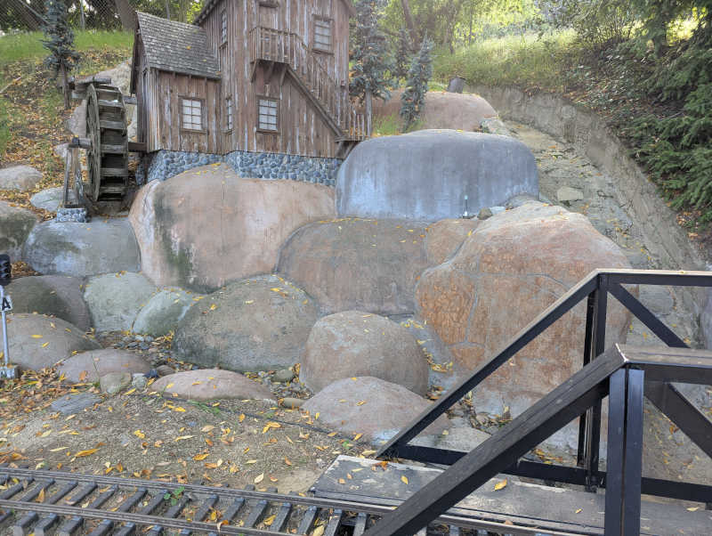
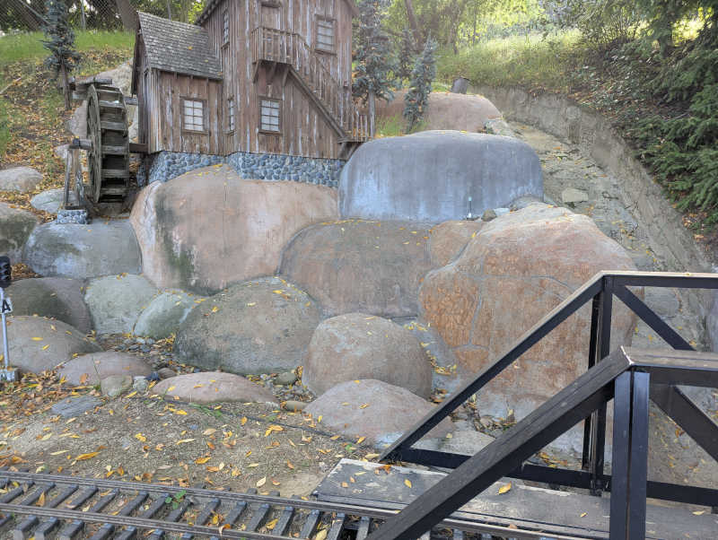
Dirt and leaves at reservoir entry under the rail bridge, before and after.


Reservoir dam, before and after.
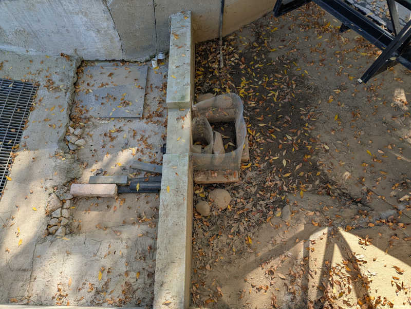

McCabe happened to stop in as I wrapped up my labor, he reviewed and approved of my results.
3:15PM - 4:00PM (0.75 facility not counted)#
Tried to improve appearance of old table saw without success. Not counting this wasted time.
Sunday 2026/1/11#
- 4.25 hours total
- 3 facility (45 out of 18)
- 1.25 conductor (17.75 out of 18)
- 0 kitchen (7.75 out of 6)
8:30AM - 10:45AM (2.25 facility)#
Track morning walk with leaf blower to clear loose leaves from track. Also removed derailment risks like rocks, branches, and pine cones. Since I had the leaf blower, finish my morning routine by clearing off Sherwood station platform and guest entry area.
The water wheel feature is still a bit of a mess after recent rains. I found the grate lifted, implying somebody was in the middle of a project.
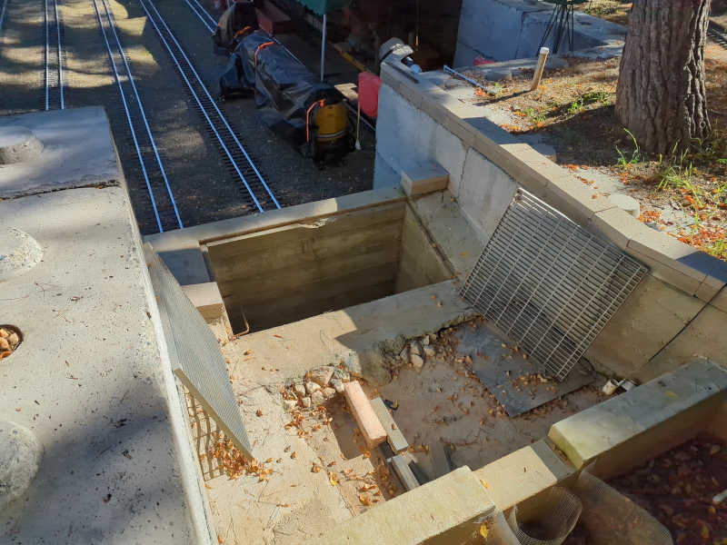
10:45AM - 11:00AM (0.25 conductor)#
Train crew safety meeting. Three trains had their engineers and conductors so I’m relief conductor on an as-needed bases. Frees me up to go back and look at the water wheel.
11:00AM - 11:45AM (0.75 facility)#
After 11AM and no sign of McCabe, reached out via text message. Received assignment: Reinstall grates, clear out whatever leaves are easy to clean, then activate water wheel. Campbell helped execute this plan.
It took a while for water reservoir level to build up to flow over the wall. The pump had to cycle on and off several times before reaching a state of steady flow.
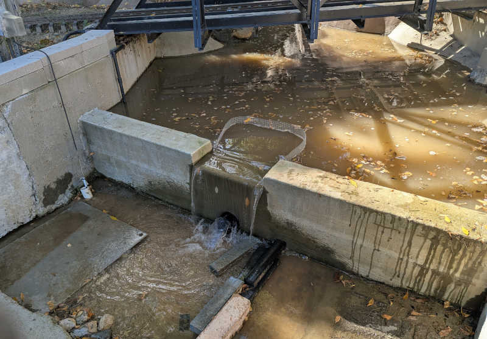
1:45PM - 2:45PM (1.00 conductor)#
Late in the afternoon I conducted Fuad’s train for an hour then helped put the bench cars and the engine away at the end of the day.
3:15PM#
Turned off water wheel electric power and water valve. See what the reservoir looks like next time.
Saturday 2026/1/10#
- 7.5 hours total
- 7.5 facility (42 out of 18)
- 0 conductor (16.5 out of 18)
- 0 kitchen (7.75 out of 6)
Work day! Good turnout means getting lots done alongside with general meeting people and socializing.
Followed up with Paul Boschan about boilers. I should try to get my hands on ASME BPVC section 1. It sets up the basics and also define miniature boiler which applies to scale steam models and locomotives.
9:00AM - 10:00AM (1 facility)#
Work began with a Nelson assigned task: plant some baby Blue Chalksticks (Senecio Mandraliscae) to see how they do. Previous plant experiments got eaten by park animals, hopefully they don’t find these as delicious.

There are a few more holes in the weed cloth than there were plants. I filled the middle leaving borders around. If these survive, we can either plant more to fill out the perimeter or hope the plants will fill out.

10:00AM - 12:15PM (2.25 facility)#
Next up is a Finch assigned task to rake leaves. I accidentally gathered a crew for this task as Bickel and Chu asked how they can help with work day. Might as well invite them to join me!
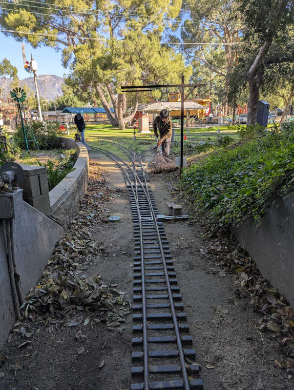
Three people working as a team cleared up leaves built up in front of the two leaf-infested ground level tunnels. We finished up in time for lunch.
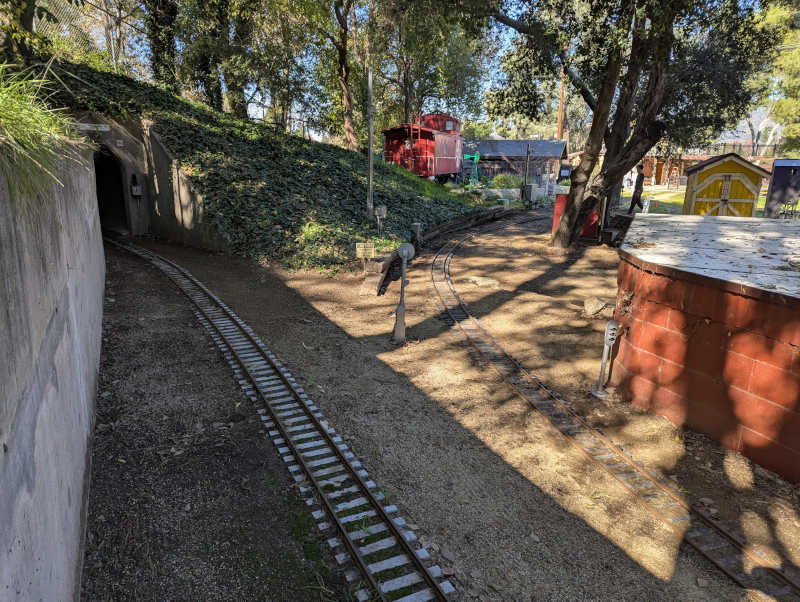
Lunch of tasty Mama Bear sandwiches and chatting with club members I have yet to meet.
1:00PM - 2:45PM (1.75 facility)#
After lunch I was assistant for Perez project of setting up radio repeater. There were a few minor misadventures including a lost & found antenna cap but it’s nominally up and running. To test range I walked over to Bagley wall while Perez walked to member entrance gate. Sounded really good!
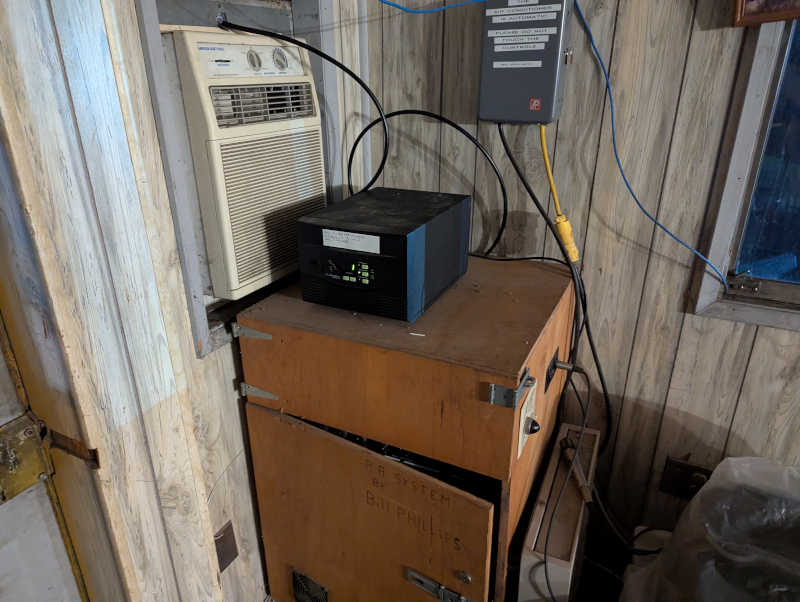
With the new repeater antenna active, the old antenna was coiled up. It will be removed later but it stops being a trip hazard now.
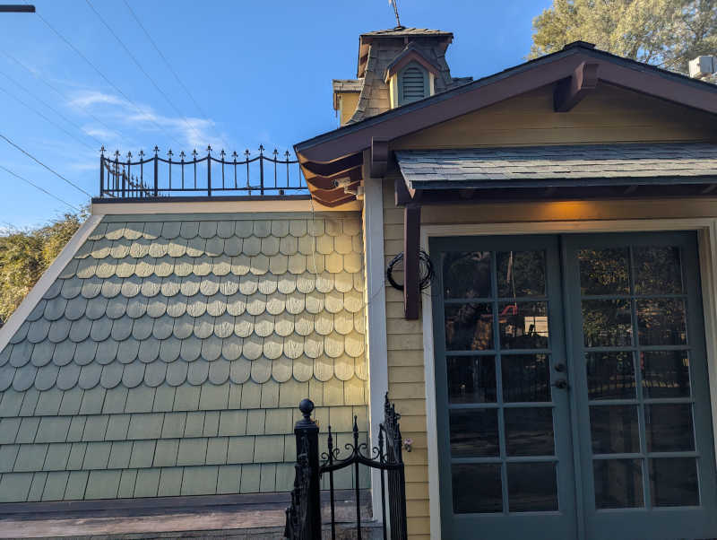
After radio project declared a success, took a break to chat with Perez and Chu and Chu (father and son) about trains and the club. For driving large brushed DC motors Perez recommends the Dimension Engineering Sabertooth 2x32 driver
After they departed for home I moved on to my solo project.
3:30PM - 6:00PM (2.5 facility)#
At the board meeting Suncin asked for volunteers on several projects, I signed up to remove rust from the old table saw. Suncin specified Merryland Strip Disc for the job so I bought a pack and had it along with my angle grinder ready in my car. I brought them to the rusty table saw surface.

The rust was more advanced than I had thought. It had grown beyond light surface rust to having a pretty hardy black layer. The strip disc was up to the task of removal but it wasn’t as gentle as I hoped it would be. While better than a steel wire brush, it still left swirls of a rotary power tool at work. Nevertheless, the top flat surfaces are now rust-free. The two guide channels and the guide bar itself are still rusty, as the Merryland disc isn’t the right shape to address those items.

This was a good place to pause, as I’ve maxed out the daily work hours limit. I found a quart of random motor oil in a cabinet. I applied a thin coat to keep rust from immediately returning while I think about what to do next.
Sunday 2026/1/4#
- 1.0 hours total
- 1 facility (34.5 out of 18)
- 0 conductor (16.5 out of 18)
- 0 kitchen (7.75 out of 6)
9:00AM - 10:00AM (1.0 hrs facility)#
No public rides today due to rain, but stopped in to walk around the track in reverse direction from what I’ve been used to so far. Trying to imagine what I would watch for to ensure passenger safety. No leaf blower today, but I did pick up large branches as I went along.
Walking down mountain division eastward from water wheel, my left foot found a sinkhole collapsing to nearly my knee. Thankfully I did not twist my ankle.

Here’s a picture showing its location relative to train storage barn.
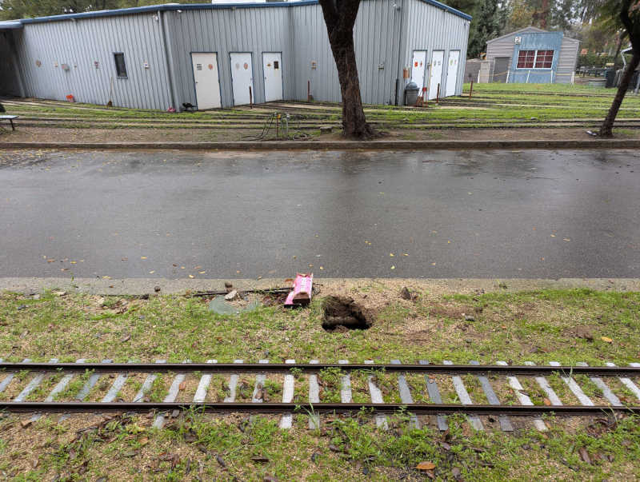
The hole is immediately above a water drain hole. Looks like dirt has been draining out of that hole along with water.
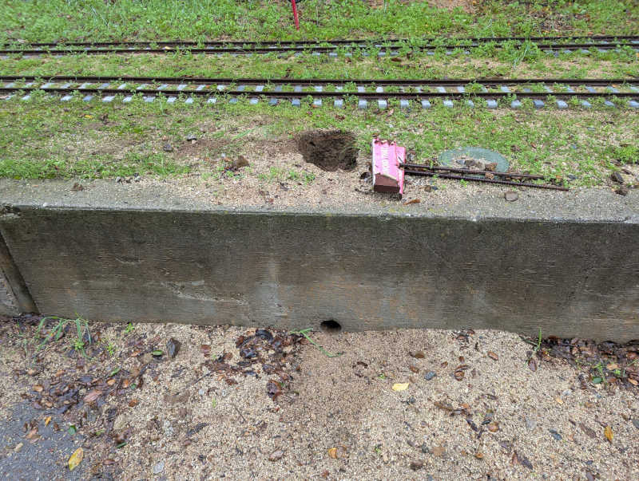
To ensure my good intentions won’t end up being counterproductive I consulted with Nelson via text message. After confirmation I’m good to go, I grabbed a shovel and filled the hole back up with dirt conveniently at hand.
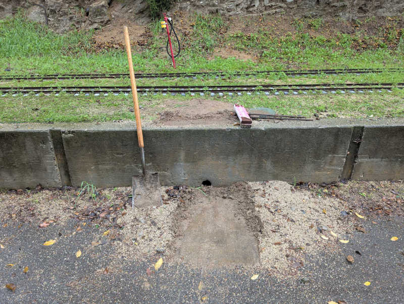
Since it’s raining, things are still muddy. Will need to revisit after it has a chance to dry and settle, but at least now it presents no risk to anyone else’s ankles.